4．庞加莱在组合拓扑方面的工作
19世纪快结束时，组合拓扑中发展得颇为完善的唯一区域是闭曲面理论。贝蒂的工作只是一个更广的理论的起点。最先系统地一般地探讨几何图形的组合理论的人，公认为是组合拓扑的奠基者，即庞加莱（1854—1912）。他是巴黎大学的数学教授，被认为是19世纪最后四分之一和本世纪初期的领袖数学家，并且是对于数学和它的应用具有全面知识的最后一个人。他写了大量研究论文、教本和通俗论文，涉及几乎数学的所有基本领域以及理论物理、电磁理论、动力学、流体力学和天文学的主要领域。他的最杰出的著作是《天体力学的新方法》（Les Méthodes nouvelles de la mécanique céleste，三卷，1892—1899）。自然科学问题是他的数学研究的动机。
庞加莱在从事于我们即将说明的组合理论之前，对微分方程的定性理论这个拓扑的另一领域做出了贡献（第29章第8节）。这个理论所处理的是积分曲线的形状和奇异点的性质，所以基本上是拓扑工作。对于组合拓扑的贡献是由下述问题激发出来的：当x，y，z都是复数时，确定代表代数函数f（x，y，z）＝0的四维“曲面”的结构。他断定系统地研究一般的或n维的图形的位置分析是必要的。他在1892年和1893年的《周报》（Comptes Rendus）中发表了一些短文，然后于1895年发表了一篇基本性的论文(30)，接着是一直到1904年发表在几种期刊上的五篇长的补充。他认为他在组合拓扑方面的工作与其说是拓扑不变性的一种研究，不如说是研究n维几何的一种系统方法。
庞加莱在他的1895年的论文里，企图通过用n维图形的解析表示来建立n维图形的理论。在这样的研究中他没有取得很多的进展，因而他转向流形的即黎曼曲面的推广的纯几何理论。如果一个图形的每一个点有一个邻域，同胚于n－1维实心球的内部，这图形就是一个n维的闭流形。所以圆周（以及任何同胚图形）是一个一维流形。球面或环面是二维流形。闭流形之外，有带边界的流形。正方体或实心环是带边界的三维流形。每一个边界点的邻域只是二维球的内部的一部分。
庞加莱最后所采用的办法出现在他的第一个补充性的附录里(31)。他研究流形使用的是弯曲的胞腔或图形小块，但我们阐述他的思想却将使用后来布劳威尔所引进的术语：单形（simplex）和复形（complex）。一个单形只不过是一个n维的三角形。就是说，零维单形是一个点；一维单形是一条线段；二维单形是一个三角形；三维单形是一个四面体；n维单形是一个具有n＋1个顶点的广义的四面体。一个单形的较低维的面还是单形。一个复形是具有下述性质的一组有限多个单形：组中任何二个单形的交，如果有的话，是一个公共的面，并且组中每一个单形的每一个面也是组中的一个单形。单形也叫胞腔（cell）。
为了组合拓扑的目的，我们对每一维数的每一个单形赋予一个定向。例如，以a0，a1和a2为顶点的二维单形（一个三角形），通过选定顶点的一个顺序，譬如说是a0a1a2，就给了它一个定向；把这样定了向的这二维单形记作E2。从这顺序经过偶数个置换所得到的任何顺序，都说是具有同一个定向。所以，（a0a1a2），（a2a0a1）或（a1a2a0）都给出E2。从这个基本的顺序经过奇数个置换所得到的任何顺序，都代表相反定向的单形。所以－E2由（a0a2a1）或（a1a0a2）或（a2a1a0）给定。
一个单形的边缘由这单形所包含的低一维的单形组成。所以一个二维单形的边缘由三个一维单形组成。但是边缘必须取适当的定向。我们按照下述规律来得到定了向的边缘：单形Ek
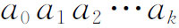
在它的边缘的每一个k－1维的单形上诱导出定向
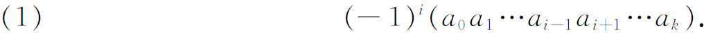
以这里的k个点为顶点的一个定向单形
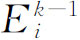
可以具有（1）所给出的定向；这时候，我们说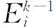
跟Ek的关联数（incidence number）是1，以表示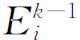
的定向相对于Ek的关系。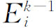
可以具有相反的定向，这时候关联数是－1。不管关联数是1或－1，基本的事实是，Ek的边缘的边缘是0。对于一个给定的复形，可以作它的k维定向单形的线性组合。例如，如果
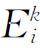
是一个k维定向单形，并且ci是一个正或负的整数，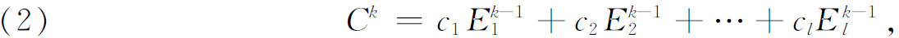
这样的一个线性组合叫做一个链（chain）。整数ci只不过告诉我们应计算这给定的单形多少次，负数还表明这单形的定向的改变。如果我们的图形是由四个点（a0a1a2a3）确定的四面体，我们能作链
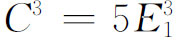
。任一链的边缘是这链的所有单形的所有低一维的单形的和，每一单形都带上适当的关联数，并且带上（2）中出现的次数。链的边缘既然是链中出现的每一个单形的边缘的和，链的边缘的边缘便是零。一个边缘为零的链叫做一个闭链（cycle）。所以，有些链是闭链。闭链之中有些是其他链的边缘。例如单形
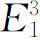
的边缘是一个闭链，并且是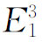
的边界。但是，如果我们原来考虑的图形不是这个三维单形，而是这个三维单形的边界曲面，我们还会有这同一个闭链，但它已不是边界。举另一例，平环（图50.10）上的链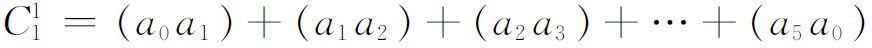
是一个闭链；因为a1a2的边缘是a2－a1等，整个链
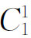
的边缘是零。但是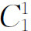
并不是任何一个二维链的边缘。这在直观上是明显的，因为所讨论的复形是平环，因而内洞的内部不是图形的部分。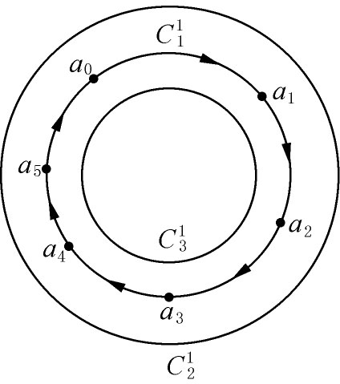
图50.10
有可能两个闭链中的每一个都不是边缘，但它们的和或差却是一个区域的边界。例如，
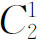
和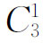
（图50.10）的和就是这平环的整个面积的边界。这样的两个闭链叫做相关的。一般地说，闭链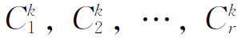
叫做相关的，如果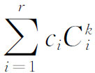
是边缘，其中ci不都是零。
然后庞加莱引进他称之为贝蒂数（为了归功于贝蒂）的那些量。考虑复形中某一个维数的所有可能的单形，该维数的无关的闭链的个数就叫做该维数的贝蒂数（庞加莱实际上用的数是贝蒂的连通数加1）。例如，对于平环这个例子，零维贝蒂数是1，因为任一点都是一个闭链，但两个点是连接它们的线段的边缘。一维贝蒂数是1，因为存在不为边缘的一维闭链，但任意两个这样的闭链（它们的和或差）就是边缘。二维贝蒂数是零，因为二维单形的链中无闭链。人们可用圆域跟环作比较，来领会这些数的意义。圆域的每一个一维闭链都是边缘，从而一维贝蒂数是零。
在1899年的这篇论文里，庞加莱还引进了他所称的挠系数（torsion coefficient）。一个更复杂的结构，例如射影平面，可能有一个不为边缘的闭链，而2倍这闭链却是边缘。例如，如果把三角形都像图50.11所表明的那样定向，四个三角形的边界就是BB这条直线的2倍（我们必须记着AB和BA是同一条线段）。这个数2就叫做一个挠系数，并且这相应的边线BB叫做一个挠闭链。
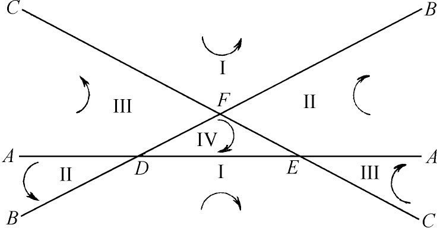
图50.11
即使从这些极简单的例子已经清楚可见，一个几何图形的贝蒂数和挠系数确实能够以一种方式把一个图形跟另一个区别开来，例如平环不同于圆域。
庞加莱在他的第一篇（1899）和第二篇补充中(32)，介绍了一个复形的贝蒂数的算法。每一个q维单形Eq的边缘上的q－1维单形有关联数＋1或－1；指定不在Eq的边缘上的一个q－1维单形以零为关联数。然后能作一个矩阵，它表明第j个q－1维单形的，相对于第i个q维单形而说的关联数
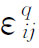
。对于每一个非零的维数q，有这样的一个矩阵Tq。Tq的行数是复形中的q维单形的个数，列数是q－1维单形的个数。据此，T1给出顶点相对于棱的关联数，T2给出一维单形相对于二维单形的关联数等。通过对矩阵作初等运算，能够使非主对角线上的元素都变成零，并使这对角线上的元素是正整数或零。设这些对角线上的元素中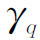
个是1。庞加莱证明了q维的贝蒂数pq（即贝蒂的连通数加1）是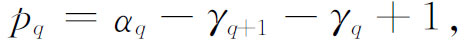
这里
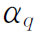
是q维单形的个数。庞加莱把具有挠系数的复形跟不具有挠系数的复形区别开来了。在后一情形，对于所有的q，主对角线上的所有数都是零或1。大于1的数表明挠系数的出现。
他还引进了n维复形Kn的示性数（characteristic）N（Kn）。如果复形有αk个k维单形，按定义
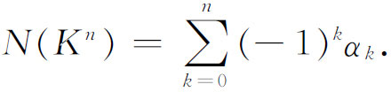
这个量是欧拉数V－E＋F的一个推广。关于这个示性数，庞加莱的结果是，如果pk是Kn的k维贝蒂数，那么(33)
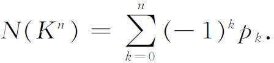
这个结果叫做欧拉-庞加莱公式。
庞加莱在他1895年的论文中介绍了一个基本定理，称为对偶定理（duality theorem）。它涉及一个闭流形的贝蒂数。我们已经说过，一个n维闭流形是一个复形，它的每一点有一个邻域同胚于n维欧几里得空间的一个区域。这定理说，在一个n维的能定向的闭流形中，p维的贝蒂数等于n－p维的贝蒂数。然而他的证明并不完全。
庞加莱在致力于区别复形时，另外引进了（1895）复形的基本群（fundamental group）这一概念，也称为庞加莱群或第一同伦群。它今天在拓扑中起着相当重要的作用。想法来自考虑单连通的平面区域与多连通的平面区域的区别。在圆域的内部，所有闭曲线都能缩成一点。但是在平环上，一条闭曲线能否缩成一点，要看它是否包围平环的内圆边界而定。
考虑以这复形的一点y0为起点和终点的全体闭曲线，就可以得到更明确的理解。然后在这些闭曲线中，把能通过在复形空间的连续运动而从一条变成另一条的那些闭曲线说成是互相同伦的（homotopic），并把它们归于一类。这样平环中的从y0开始而又回到y0的（图50.12），并且不包围内边界的闭曲线就是一类；而那些从y0开始而又回到y0的，确实包围内边界的，是另一类。那些从y0开始而又回到y0的，并且包围内边界n次的，又是另一类。
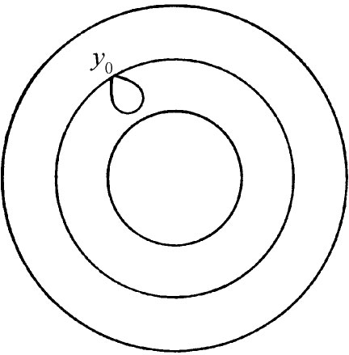
图50.12
现在能够在类和类之间定义一种运算，几何地说，就是从y0开始，描出一类中的任一曲线，然后描出第二类中的任一曲线。两条曲线选取的顺序，以及描出一条曲线时所取的方向，都加以区别。于是类就形成一个群，叫做这复形K相对于基点y0的基本群。现在把这个非交换的群记作π1（K，y0）。对于道路连通的复形，这个群并不真正依赖于y0这个点。换句话说，在y0处的这个群和在y1处的同构。平环的基本群是无穷循环群。分析学中常用的单连通区域，例如圆周和它的内部，它的基本群就只有一个元素——恒同元素。正如圆域跟平环由于它们的基本群而有区别一样，也能把更高维的复形在这方面显著地区别出来。
庞加莱遗留下了一些重要的猜测。他在他的第二篇补充里断言，如果两个闭流形有相同的贝蒂数和挠系数，它们就同胚，但是在第五篇补充(34)里，他给出了一个三维流形，它的贝蒂数和挠系数跟三维球（四维实心球的表面）的相同，但它不单连通。因此他增加单连通性作为一个条件。他然后指出存在三维流形，它们具有相同的贝蒂数和挠系数，但具有不同的基本群，从而它们不同胚。亚历山大（James W．Alexander，1888—1971）是普林斯顿大学的数学教授，后来在高等学术研究所，他证明了(35)两个三维流形可以有相同的贝蒂数、挠系数和基本群，却还是不同胚。
庞加莱在他的第五篇补充（1904）里作了一个颇加限制的猜测，即每一个单连通的、闭的、能定向的三维流形同胚于三维球。这个闻名的猜测曾经被推广成，每一个单连通的、闭的n维流形，如果具有n维球的贝蒂数和挠系数，它就同胚于n维球。庞加莱的猜测以及这推广了的推测都还没有证明(36)。
另一个闻名的猜测，叫做庞加莱的主猜测（Hauptvermutung，最重要的猜测）。这个猜测说，如果T1和T2是同一个三维流形的单纯（不必是平直的）剖分，那么T1和T2有同构的重分(37)。